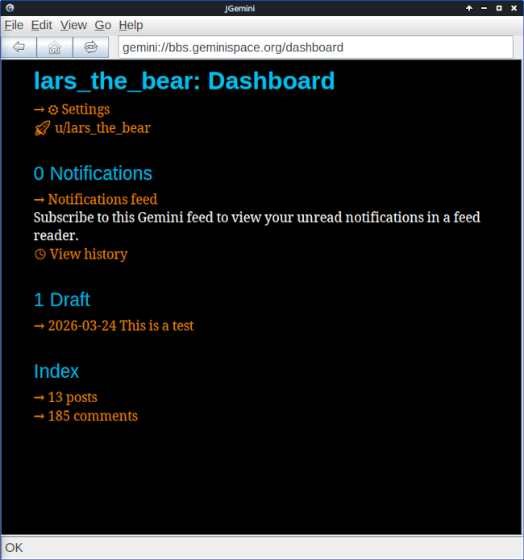
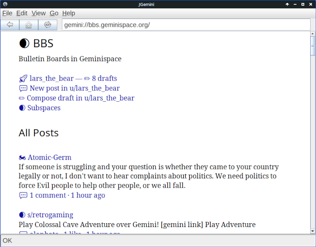
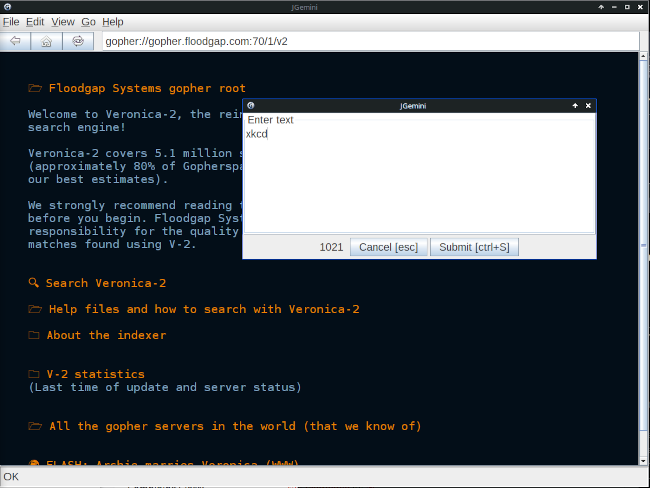

Announcing JGemini version 2.0

JGemini started life as a Java-based graphical browser for the “small net” Gemini protocol. There weren’t any graphical browsers for Linux at that time and, as one of the stated design goals of the Gemini protocol was that it should be simple enough to be able write a browser “in a weekend”, I undertook to do just that.
The result was something that clearly looked as if it had been written in a weekend.
And there I left it for five years, until I decided to take an interest in Gemini again this year. I soon realized that things had changed, and my browser was hopelessly outclassed by the likes of Lagrange and Alhena.
Although I remain unconvinced about the long-term future of Gemini and similar efforts, I thought it was worth dusting off my browser, and seeing what I could achieve in a second weekend.
Now it clearly looks as if it’s been written in two weekends.
Given that we now have browsers for Linux, and good ones at that, you might wonder why I thought it was worth expending even this amount of effort. Well, several reasons.
First, I needed to brush up my Java programming. I’m retired from regular employment, but I still contribute to a few open-source projects. After a year of retirement, I could feel my Java skills starting to slip away.
Second, there are features that I wanted to implement, that none of the other Gemini browsers do, at least partly for ideological reasons. For example, JGemini has full, native support for Markdown. There’s constant debate in the Gemini world about whether Markdown might be a better choice of document format than the standard ‘Gemtext’, but none of the well-established browsers support it, and seem unlikely to.
I’d also like to be ready if there’s a move to a new development in the world of small-net protocols, with a reasonable number of people behind it. Most Gemini users are perfectly happy with Gemini as it is, and that’s fine. But if there’s a proposal for something that I think would be more suitable, I’d like to be in a position to adopt it with working software.
Self-justification aside, here are the features of version 2.0:
- Support for Gemini, Spartan, Gopher, and
nexprotocols, including user input and redirection - Displays Gemtext, CommonMark Markdown, and plain (e.g., UTF-8) text and popular image formats
- Renders local files as well as server content
- Authentication using per-server client certificates
- Text styling can be configured to suit the display and user preference
- Uses anti-aliased font rendering for a smoother text appearance
- Fetches documents in the background to improve user interface responsiveness
- Text selection with cut-and-paste
- Search in document
- Downloaded documents can be saved
- Supports multiple windows
- Search directly from the URL bar
- Saves no state by default, for privacy
- Built-in documentation viewer
Version 2.0 still lacks some features that many deem essential, like the ability to bookmark pages. I’m still trying to see how I reconcile features like this with JGemini’s intentionally stateless design. There’s also the irritating need to configure the application by hacking on configuration files which, again, needs some thought. Maybe I’ll implement these features in version 3, if there’s any interest.
All the source code is available from my GitHub repository. In particular, there is a ready-to-use binary for release 2.0.0.
If you try it, do please let me know what you think.
Screenshots
Here are the obligatory screenshots.



Have you posted something in response to this page?
Feel free to send a webmention
to notify me, giving the URL of the blog or page that refers to
this one.